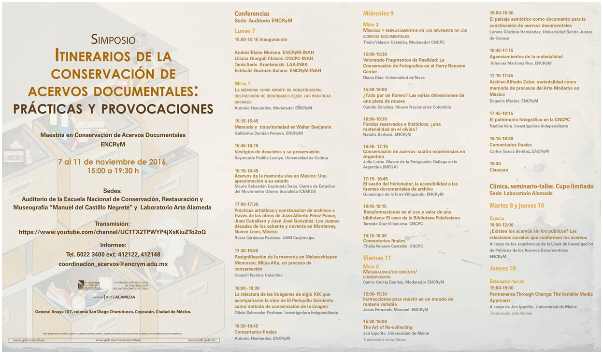
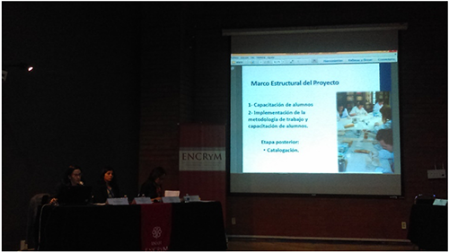
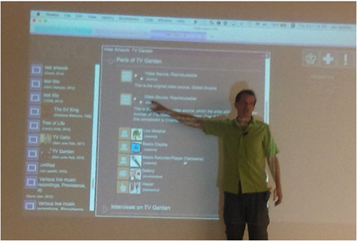

Reseña del Simposio “Itinerarios de la conservación de acervos documentales: prácticas y provocaciones”
Daniela Santhi Carreón Cano
Como parte de la propuesta académica de la maestría en Conservación de Acervos Documentales (MCAD), durante la semana del 7 al 11 de noviembre de 2016, se llevó a cabo en el Auditorio de la ENCRYM y en las Instalaciones del Laboratorio de Arte Alameda, el simposio “ITINERARIOS DE LA CONSERVACIÓN DE ACERVOS DOCUMENTALES: PRÁCTICAS Y PROVOCACIONES”, con el propósito de provocar el dialógo y el análisis sobre el ejercicio de la conservación en los acervos documentales. Este evento estuvo integrado por 18 conferencias, agrupadas en tres mesas temáticas distintas, una clínica, y un seminario-taller.
La conservación de acervos documentales implica un vasto entretejido de conceptos, nociones y prácticas, las cuales fueron reveladas a través de las conferencias sobre los ejes temáticos que muestran la manera en que conceptos fundamentales como la memoria, la identidad, el patrimonio, el documento y la lectura/relectura están implicados en el ejercicio cotidiano de la conservación. Es oportuno referir que todos los contenidos desarrollados en este evento académico se encuentran enlistados en la Figura 1, y que existe la posibilidad de consultar el registro audiovisual de las conferencias en el canal de la ENCRYM en YouTube MX ®.

Figura 1. Programa del simposio
La “MESA 1. LA MEMORIA COMO ÁMBITO DE CONSTRUCCIÓN, DESTRUCCIÓN DE IDENTIDADES DESDE LAS PRÁCTICAS SOCIALES”1, abordó desde diversas perspectivas, la manera en que a partir de la memoria los distintos tipos de acervos documentales, se activan procesos de relectura y significación en la sociedad. El ejercicio de reflexión de los ponentes tuvo distintas coordenadas que abarcaron desde un análisis crítico de los postulados de Walter Benjamin respecto de la memoria, y sobre cómo generan un proceso de construcción de significados para una sociedad, hasta la manera en que una comunidad recupera y preserva las diversas entidades materiales e inmateriales a través de detonar la protección de tradiciones y acentos culturales regionales reflejados en las costumbres, el paisaje y las expresiones documentales, lo que repercute en un acto de conservación de identidad regional con la presentación del colectivo Calpulli Tecalco. Las perspectivas de tratamiento de las distintas conferencias fueron vastas, pero confluyeron en la manera en que la sociedad configura su identidad, ya sea de forma explícita, mediante una acción de manterner la perdurabilidad de las evidencias; o de manera implícita, a través del olvido, lo cual impacta, sin duda, en los objetivos y sentido de las estrategias que se plantean como prácticas de conservación en los distintos acervos.
Las distintas posturas y reflexiones presentadas en la “MESA 2. MIRADAS Y EMPLAZAMIENTOS EN LOS DEVENIRES DE LOS ACERVOS DOCUMENTALES”2 permitieron visibilizar los distintos escenarios y emplazamientos desde los que se participa y se activan acciones que generan que los distintos ítems que conforman un acervo, tengan una lectura, interpretación y uso que construye su propósito como un objeto documental, al mismo tiempo que buscan promover su estabilidad material y uso. Dentro de esta mesa se presentó un panorama sobre la práctica de la conservación en distintos escenarios geográficos, con representantes de México, Estados Unidos, Argentina y Colombia, cuyas presentaciones confluyeron en el análisis y la reflexión acerca de los retos que implica plantear prácticas de conservación que equilibren la estabilidad de la materia en uso, y que al mismo tiempo promuevan la consulta de los materiales originales. En esta mesa en particular fue posible observar la manera en que el conservador constituye un elemento fundamental para mediar la función de un objeto documental —es decir, al ser consultado, leído e interpretado por el público—, y establecer, al mismo tiempo, estrategias que fomenten su perdurabilidad, lo que incide en la manera en que se plantean los lineamientos de acceso, consulta, manipulación y presentación de los objetos.
Las distintas conferencias mostraron cómo la valoración de los objetos, desde distintos contextos como lo puede ser el museo o el archivo, entre otros, genera dinámicas particulares de conservación aplicadas a ellos, donde se crean estrategias para fomentar la perdurabilidad de los objetos, sin obstaculizar la función reconocida por la sociedad.

Figura 2. Mesa 2 MIRADAS Y EMPLAZAMIENTOS EN LOS DEVENIRES DE LOS ACERVOS DOCUMENTALES
El último bloque temático, intitulado “MESA 3. MATERIALIDAD/DOCUMENTO/CONSERVACIÓN”3, permitió tener un panorama general sobre cómo interactúan estos conceptos en el ejercicio de la conservación de acervos documentales. Las conferencias pusieron sobre la mesa de diálogo la manera en que los contenidos de la materia de los acervos proponen lecturas polisémicas que condicionan, por consiguiente, las formas de aproximación. Un aspecto destacable fue observar cómo a partir de una interpretación de los documentos se genera no solo una lectura desde el presente, sino que se realizan retrospecciones y prospecciones sobre la función y el uso.
Este tipo de postura es uno de los sustentos principales de las estrategias de conservación. Las diversas conferencias mostraron que uno de los puntos clave en la conservación de acervos documentales radica en mantener una mirada panorámica e incluyente ante lo que se reconoce como “conservable”. Los métodos de registro se renuevan constantemente, por lo que nuevos materiales, técnicas y tecnologías son utilizados como medio de documentación aun cuando no siempre son reconocidos como objetos conservables. La conservación de fotografías, material sonoro, audiovisual, analógico y digital fueron otros de los temas abordados en esta mesa, a partir de una reflexión crítica sobre las implicaciones que tiene la falta —o la parcialidad— de políticas estatales hacia los retos que implica preservar contenidos digitales en tiempos de una constante evolución tecnológica, y de la falta de reconocimiento que estos materiales como objeto de conservación.
Otro de los aspectos abordados en esta mesa fue la manera en que la caracterización material, y la lectura de los contenidos a partir de esta, configuran acervos, lo que genera que estos tengan su propia identidad, y que las estrategias de conservación documental deban adaptarse a ellas con el fin de mantener la integridad del acervo, tanto en la manera cómo se presentan los contenidos como en los vínculos entre los elementos que dan sentido y coherencia a las colecciones.
Dentro del simposio se realizaron dos actividades que generaron una propuesta más coherente e intergral, pues permitieron atender actividades de formación académica. La primera fue la clínica intitulada “¿Existen los acervos sin los públicos? Las relaciones sociales que conforman los acervos?”, que condujo a los participantes a realizar un ejercicio crítico de reflexión que cuestionó el objetivo de la existencia de los acervos documentales, a partir de su función como repositorios de testimonios que dan sustento a la construcción social de lo que denominamos cultura. La segunda actividad fue el seminario taller “Permanence Through Change: The Variable Media Approach”, impartido por John Ippolito, académico de la Universidad de Maine, quien mostró a los alumnos de la maestría en Conservación de Acervos Documentales diferentes estrategias, pautas y miradas innovadoras para la conceptualización de los documentos digitales y su conservación.

Figura 3. John Ippolito impartiendo el Seminario-taller Permanence Through Change: The Variable Media Approach
Este evento en particular devino en un espacio de encuentro de diferentes perspectivas sobre la conservación de acervos documentales, lo que sin duda dio una mirada real y fresca de las implicaciones que tienen las prácticas cotidianas en el proceso de conservar material documental de manera coherente con su función social. El acento del evento fue la poliangularidad de perspectivas en las diversas etapas de la conservación documental, lo que permitió plantear estrategias integrales que inciden de manera favorable, desde el reconocimiento de valores documentales, gestión y manejo documental, procesos de intervención y, por supuesto, en la manera en que se da acceso y se promueve el uso de colecciones. Por supuesto, dada la constante evolución de los retos que implica la conservación de acervos documentales, este simposio constituye un espacio de discusión abierto e incluyente que seguro se consolidará así en sus próximas ediciones.
Notas al pie
1El registro audiovisual de las mesas esta disponible en el canal de la ENCRYM en YouTube MX® ENCRYM-INAH. Inauguración y Mesa 1 LA MEMORIA COMO ÁMBITO DE CONSTRUCCIÓN, DESTRUCCIÓN DE IDENTIDADES DESDE LAS PRACTICAS SOCIALES, disponible en: https://www.youtube.com/watch?v=gbWuAGnR0cc
2ENCRYM-INAH. Mesa 2 MIRADAS Y EMPLAZAMIENTOS EN LOS DEVENIRES DE LOS ACERVOS DOCUMENTALES, disponible en línea: https://www.youtube.com/watch?v=EafzbqOH9FU
3ENCRYM-INAH. Mesa 3 MATERIALIDAD/DOCUMENTO/CONSERVACION, disponible en línea: https://www.youtube.com/watch?v=zw9znZ4y45A
Como citar esta colaboración:
Apellido, nombre (año), “Título del artículo”, en Archivo Churubusco, año 1, número 2, disponible en -dirección en internet-, consultado -día, mes, año-.
Ir al cielo